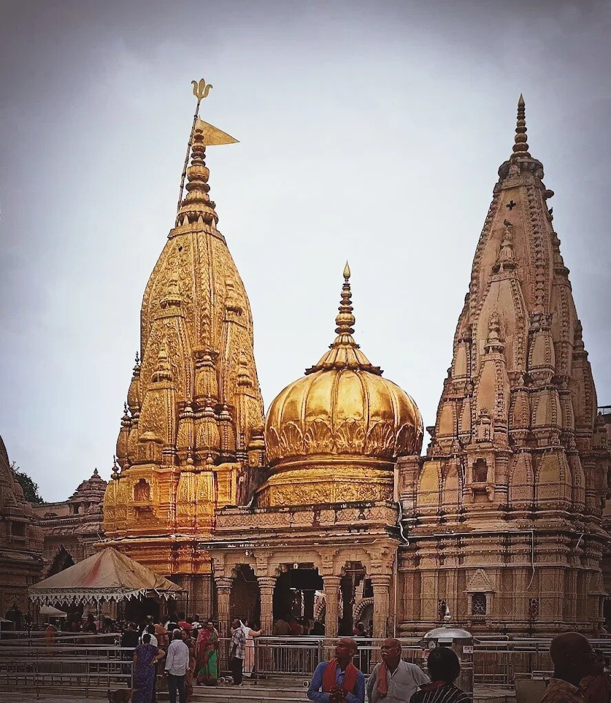

1 DAY · BEST FIRST JOURNEY
Essential Kashi Darshan
Assi Ghat → Kashi Vishwanath → Annapurna → Kaal Bhairav → Ganga Aarti
View complete details ↓
Itinerary
- Sunrise at Assi Ghat or Subah-e-Banaras
- Kashi Vishwanath and Annapurna darshan
- Lunch and a comfortable afternoon pause
- Kaal Bhairav followed by evening Ganga Aarti
Included: Private local vehicle, route coordination, pickup/drop and Hindi/English assistance.
Not included: Meals, boats, offerings, special puja and priority darshan.
Prepare: Kaal Bhairav guide · Assi Ghat story